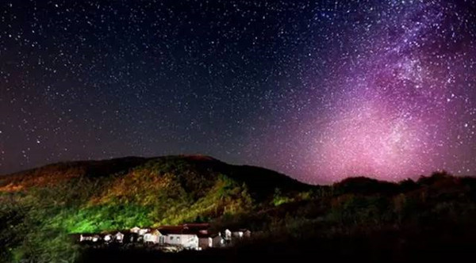
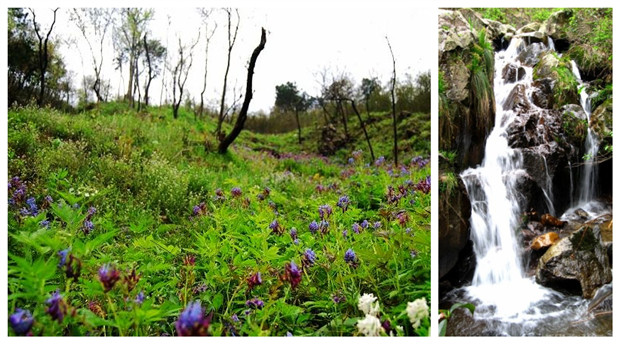
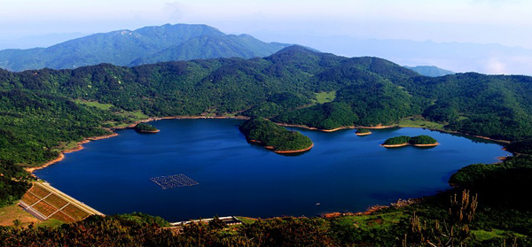

徒步吴越古道丨露营浙西天池 天龙大峡谷大挑战
- 山地徒步
- 篝火露营
- 踏青赏花
★吴越古道徒步线路，初级难度美景不断
★1200米的浙西天池，露营度过美妙一夜
★天龙峡谷中定向赛，一起挥洒青春色彩


【浙西天池】位于清凉峰国家级自然保护区内，隐匿于海拔1100米的千顷山巅，是国家一级保护动物梅花鹿的主要栖息地。来浙西天池，一看：神池浩渺，天镜浮空。湖水清洌幽蓝，蓝天、白云、山峦、野花……尽倒映于湖中，犹如瑶池仙境。二看：神池花暖，千亩樱花。野樱花盛开在整个景区，将翠绿山林点缀得五彩缤纷。碧波天池水，浪漫野樱花，而我们就是误入仙境的过客……


07:30 客户指定地点，集合出发！车上领队组织大家开始释放自我第一弹——破冰环节！！
12:00 天龙峡谷入口处（浙江临安昌化镇），地道的农家乐午餐
13:00 午餐后跟着我们的领队，热身操扭动起来~~稍作休息，沿着天龙峡谷而上，景色宜人。
16:30 我们抵达浙西天池，天池位于安徽宁国与浙江临安的交界处，四面环山围绕，波澜壮阔。跟着领队一起湖边散步，游走，拍集体照。

★浙西天池
山水奇秀，风光独特的浙西天池位于海拔1100米的千顷山巅，湖水清洌幽蓝，水天一色，山峦缓伏，视野开阔，是国家一级保护动物梅花鹿的主要栖息地。天池四周低山环列，芳草鲜美，泉流淙淙，小涧纵横，唯独中间形成一坦荡的盆地，呈山山朝千顷，水水往池流之势。浙西天池水面面积达900亩，是目前江南地势最高、面积最大的湖泊之一。可谓“神池浩渺，天镜浮空”。因此，浙西天池又被称为“江南第一池”

D2：吴越古道——返程
07:00 跟着领队冲顶乐利峰看日出，山顶上极为平整，遍地是野花、龙须草和野山楂树，布满青苔的的古老石墙坍塌其中，顺着石墙的方向一路西行，到达耸立于城墙间的巨石(剑柄石)，此处为观景的最佳之处，南边可俯视浙江天池，背面可眺望安徽群峰。
08:30 沿千年古道下撤，一路石板台阶，顺溪而下，途径千倾关、古老木桥、观溪、磕头寺等。
11:30 抵达安徽宁国万家乡大塔村，美味的农家菜
13:00 出发返回
18:00 完美结束行程

1、穿适合户外运动的宽松衣裤，（山上温度低，请带件防寒衣服，注意保暖）。
2、适合户外运动的登山鞋或者徒步鞋（千万别穿板鞋或者合脚的新鞋）
3、双肩包（腾出双手可以拍照等），头巾（功能多多）,护膝（保护膝盖），登山杖（节省30%体力消耗），雨披（有备无患），头灯或手电筒（未雨绸缪）。
4、遮阳帽、防滑手套、户外水壶、太阳镜、湿纸巾、防晒霜等。
5、个人身份证件、少量RMB，手机、相机、充电宝等个人所需物品
6、少量水果、零食、补给水、高能量户外食品；牛肉、巧克力、士力架等等丰俭由人
7、个人备用药物
【出行守则】
1，健康提醒：根据活动的难易程度，评估您是否适合参加户外运动。
2，安全原则：户外活动中听从领队指挥。正确使用户外用具及防护用具。
3，适合年龄: 10周岁-60周岁 ，如有携带年龄不符合的成员，请慎重参加户外活动。
【费用说明】
1，网站价格根据活动标配计算，具体将根据您的定制要求（如人数、餐饮、住宿、出行时间等）作对应调整
2，用餐均以桌数为单位计算。
3，团队活动统一购买户外运动高风险意外险。
【不可抗力】
1，雨天备案 ：提前三天根据天气预报，在不影响行程的前提下做雨天备案。
2，行程改期 ：由于客户自身原因造成的行程改期，所产生的违约金由客户方承担。
【徒步小贴士】
① 匀速行走，在平地和下坡路时候匀速可以减轻很多体力，靠惯性的力量带动身体的起伏。
② 呼吸均匀，鼻吸嘴呼，短吸长呼，身体不适时保持深呼吸。
③ 及时补水，小口慢咽。
④ 注意下坡路，身体微侧行走，保护膝盖。
⑤ 不饮用途中经过的山泉水。
⑥ 行走时不打闹不玩耍不拍照，目视前方。
⑦ 善于使用手杖，可以节省很多力气。
⑧ 减少坐下来休息的次数，可站着依靠大树等支撑休息。每行走45分钟休息10分钟。
⑨ 徒步后需要休息45分钟方可进食。